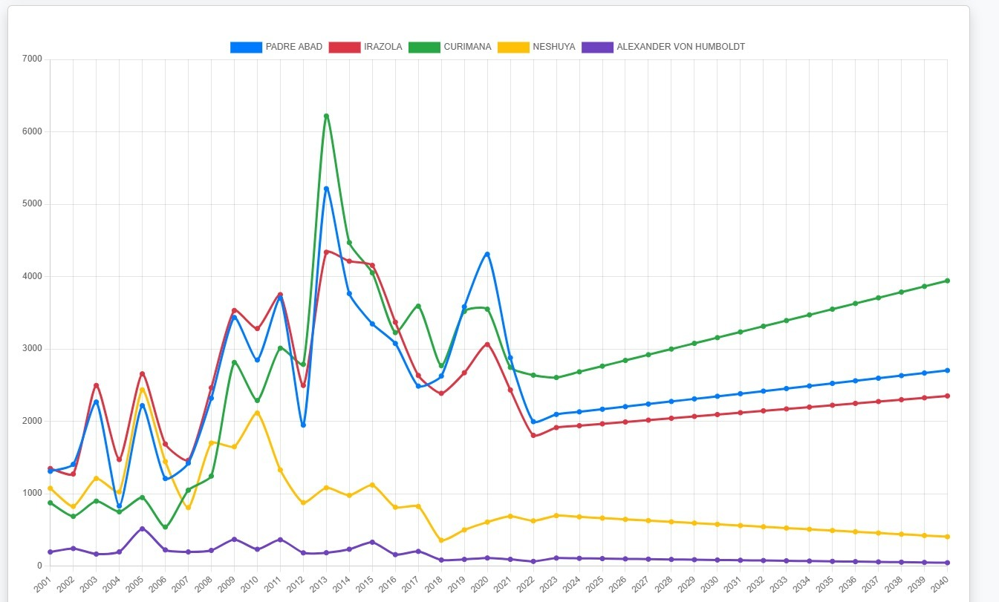
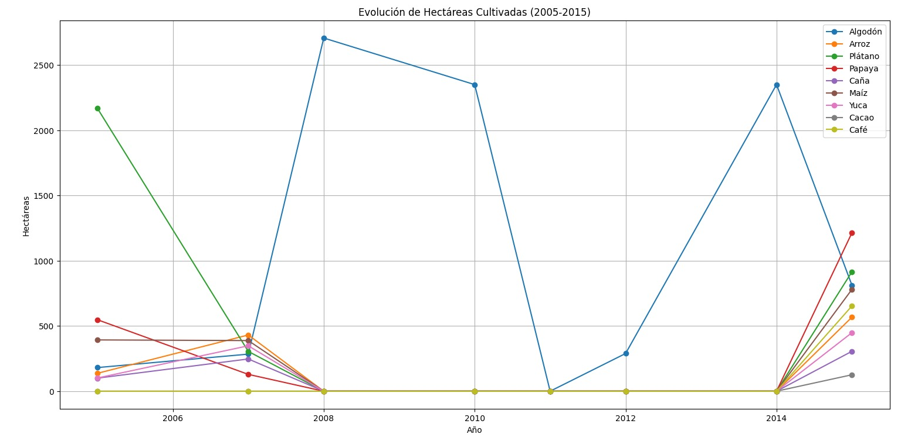
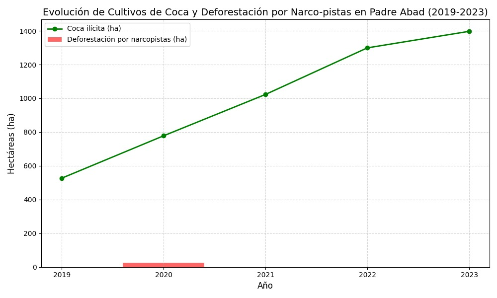

Aplicando filtros en Python y utilizando plataformas satelitales como NASA Worldview y Copernicus Browser, junto con bibliotecas como numpy, rasterio y mathoplih, se obtuvieron resultados valiosos que contribuyeron significativamente al desarrollo de este proyecto, el cual se lleva a cabo en el departamento de Ucayali, provincia de Padre Abad, distrito de Padre Abad.

En el año 2005 se evidencia una baja pérdida de cobertura boscosa en Padre Abad; los puntos oscuros representan zonas donde no existe presencia de bosque dentro del área evaluada.

Aquí se observa un aumento significativo en la pérdida de bosque, marcando uno de los niveles más altos. El área boscosa alcanzó un pico, lo que podría indicar un momento de mayor cobertura antes de un declive posterior. Los puntos oscuros muestran un incremento en las zonas sin cobertura arbórea.

La pérdida de bosque disminuyó en comparación con el período previo, estabilizándose en niveles moderados. El área boscosa comenzó a declinar tras su punto máximo, con los puntos oscuros destacando un aumento en las áreas deforestadas.

En este año, la pérdida de bosque se mantuvo reducida, similar a los niveles iniciales. El área boscosa era aún notable, pero inició una tendencia descendente. Los puntos oscuros indican zonas sin bosque, reflejando un avance en la deforestación.

Hacia este año, la pérdida de bosque se estabilizó en niveles bajos, similares a los del inicio. El área boscosa experimentó una reducción marcada desde 2019, con los puntos oscuros mostrando un aumento en las zonas sin cobertura arbórea.

Lo más importante es que la gráfica muestra un pico crítico de deforestación en 2012 con más de 5,000 hectáreas perdidas, seguido de una disminución sostenida a partir de 2018, aunque la pérdida de bosque continúa, destacando la urgente necesidad de fortalecer acciones de conservación y manejo sostenible en Padre Abad.

ELo más importante es que la deforestación en el distrito alcanzó un pico entre 2011 y 2015 con pérdidas cercanas a las 4,500 hectáreas anuales, seguida de una disminución a partir de 2016, con mejoras notables en 2023, aunque la deforestación persiste, indicando la necesidad continua de control y manejo sostenible del bosque.

La pérdida de bosque en Curimana se mantuvo baja hasta 2008, luego aumentó rápidamente, alcanzando un pico superior a 6,000 unidades alrededor de 2013, y aunque descendió después, sigue siendo un problema persistente con fluctuaciones entre 2,000 y 4,000 unidades hasta 2024.

La pérdida de bosque en Neshuya mostró picos cercanos a 2,500 unidades entre 2005 y 2010, pero desde 2011 la tendencia descendió, estabilizándose en alrededor de 500 unidades desde 2017 hasta 2024, reflejando una mejora sostenida y más marcada que en Curimana.

La deforestación en Alexander von Humboldt alcanzó su pico superior a 500 unidades en 2005, con fluctuaciones entre 200 y 400 unidades hasta 2015, pero desde 2018 se estabilizó por debajo de 100 unidades, mostrando una disminución notable y niveles bajos y estables en los últimos años.

La pérdida de cobertura vegetal varía entre los distritos: Padre Abad y Curimana alcanzaron picos de hasta 6,000 hectáreas alrededor de 2010-2015, seguidas de una disminución, mientras que Irazola mostró fluctuaciones con un máximo en 2010, y Neshuya y Alexander von Humboldt mantuvieron pérdidas estables por debajo de 2,000 hectáreas, con recuperaciones parciales en algunos distritos hacia 2023.
Los gráficos muestran la evolución de cultivos y deforestación en Padre Abad, con aumentos en coca ilícita (2019-2023), fluctuaciones en varios cultivos (2005-2015), y tendencias a largo plazo (2001-2040).

El gráfico muestra la evolución de hectáreas cultivadas en Padre Abad, Irazola, Curimana, Neshuya y Alexander von Humboldt desde 2001 hasta 2040. Curimana destaca con un fuerte crecimiento hacia 2040, mientras que Padre Abad y Irazola muestran picos entre 2005 y 2015, y Neshuya y Alexander von Humboldt permanecen estables con tendencia a la baja.

El gráfico muestra las tendencias de cultivos como algodón, arroz, plátano, caña, maíz, yuca, cacao y café entre 2005 y 2015, con un pico de algodón en 2008-2010 y un repunte en 2014.

El gráfico muestra un aumento constante de hectáreas de coca ilícita de 600 en 2019 a 1400 en 2023, junto con una deforestación inicial por narcopistas en 2020 que se mantiene baja en comparación.

Estudiante
Estudiante
Estudiante

Estudiante
Estudiante
Estudiante